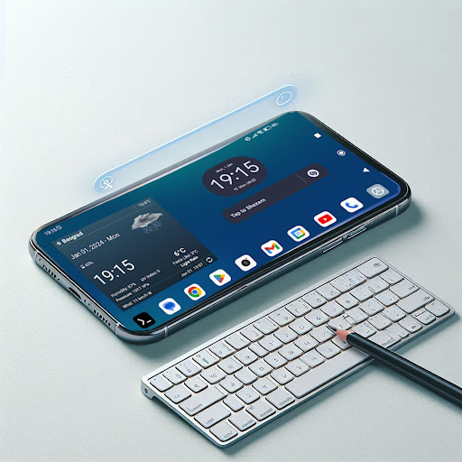
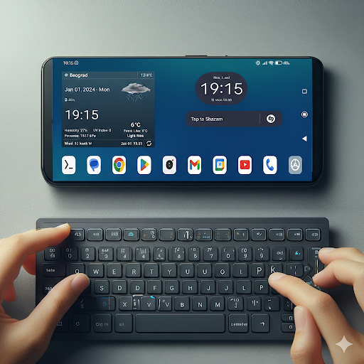
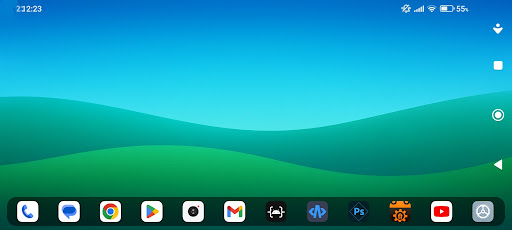

Dextop Core
Your Android Phone, Refined for Productivity.

Native Landscape Mode for Everyone
Version of the Dextop app, but without launcher capabilities (because some device manufacturers put restrictions on apps with launcher capabilities).
Made specially for phones that don't have or allow landscape mode, Dextop Core enhances your Android experience by transforming your phone into a productivity powerhouse with a landscape interface.
Even if you have a phone that supports landscape home screen orientation, this app offers you the ability to have separate landscape mode with different shortcuts and widgets layout.
Native Landscape View: All your favorite apps, from email to social media to games, display beautifully in landscape mode.
Check if there is option to enable windowed mode in developer options to get the best experience.
Seamless Keyboard Integration: Use your Bluetooth keyboard or phone's keyboard in a familiar desktop layout for effortless typing.
Customization Options: Personalize your Dextop Core experience with custom themes, widgets, and shortcuts.
Connect to bigger screen via casting: Connect to an external monitor or TV for a true desktop experience (supported devices required) with Google Home app.
Dextop Core is perfect for:
Boosting productivity: Work on documents, browse the web, and manage emails with ease.
Entertainment enthusiasts: Watch movies, videos, and browse the web in cinematic landscape mode.
Lightweight and efficient: Dextop Core doesn't drain your battery, so you can work and play longer.
Keywords: landscape mode, multitasking, productivity, desktop experience, external monitor, games, entertainment, free app, cast
Even if you have a phone that supports landscape home screen orientation, Dextop Core offers you a completely separate environment with different shortcuts and widgets layout, optimized for horizontal use.
Desktop Experience
Native landscape view for all your favorite apps, from email to social media to games.
Seamless Input
Full Bluetooth keyboard integration with a familiar desktop layout for effortless typing.
Big Screen Ready
Connect to an external monitor or TV via casting for a true desktop setup.



